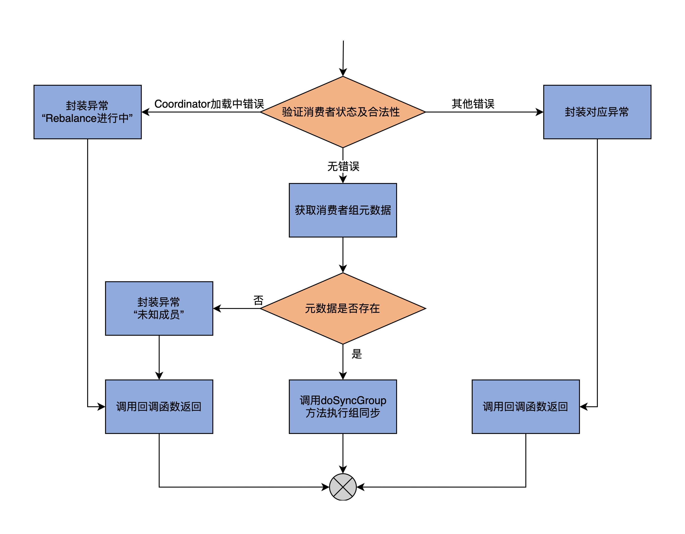
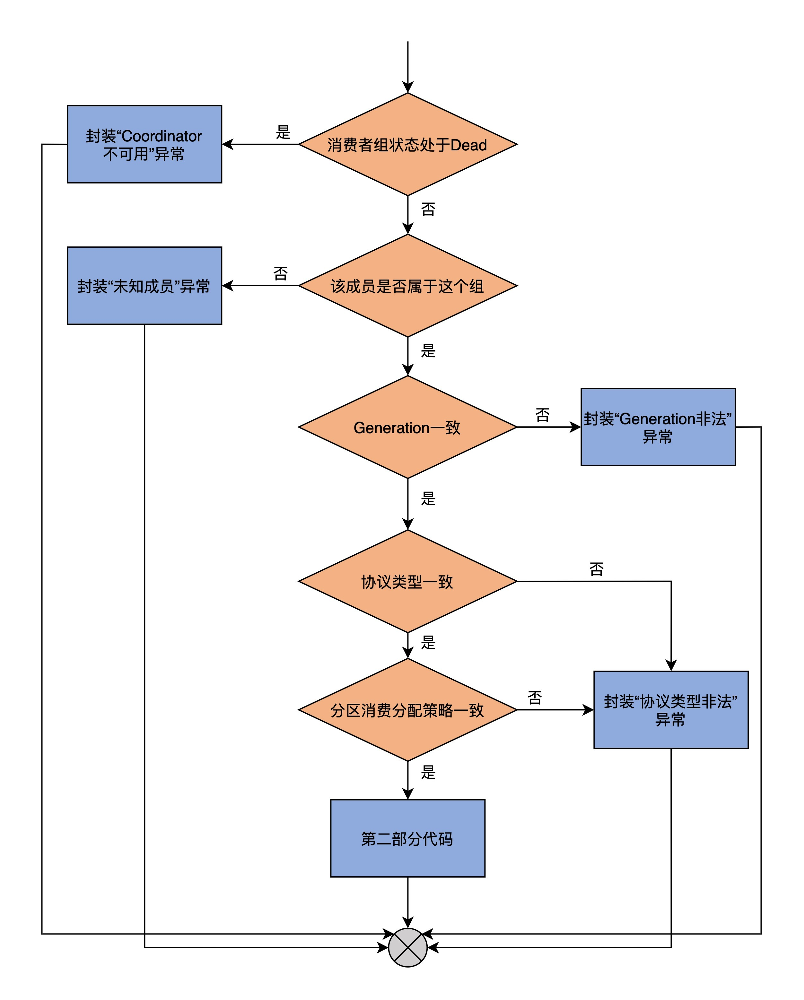
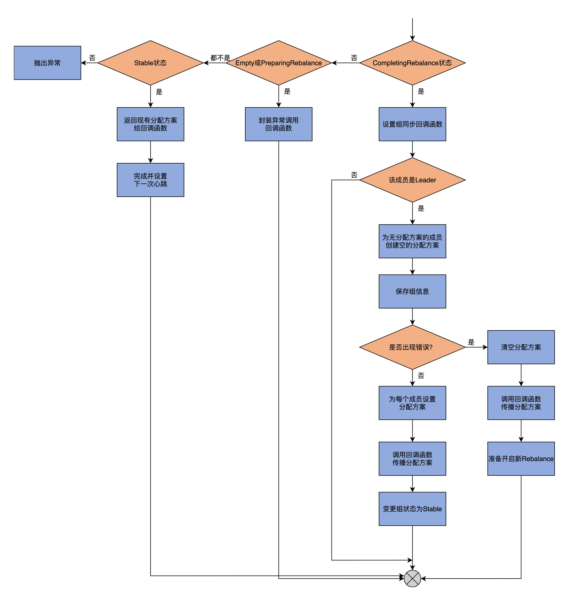
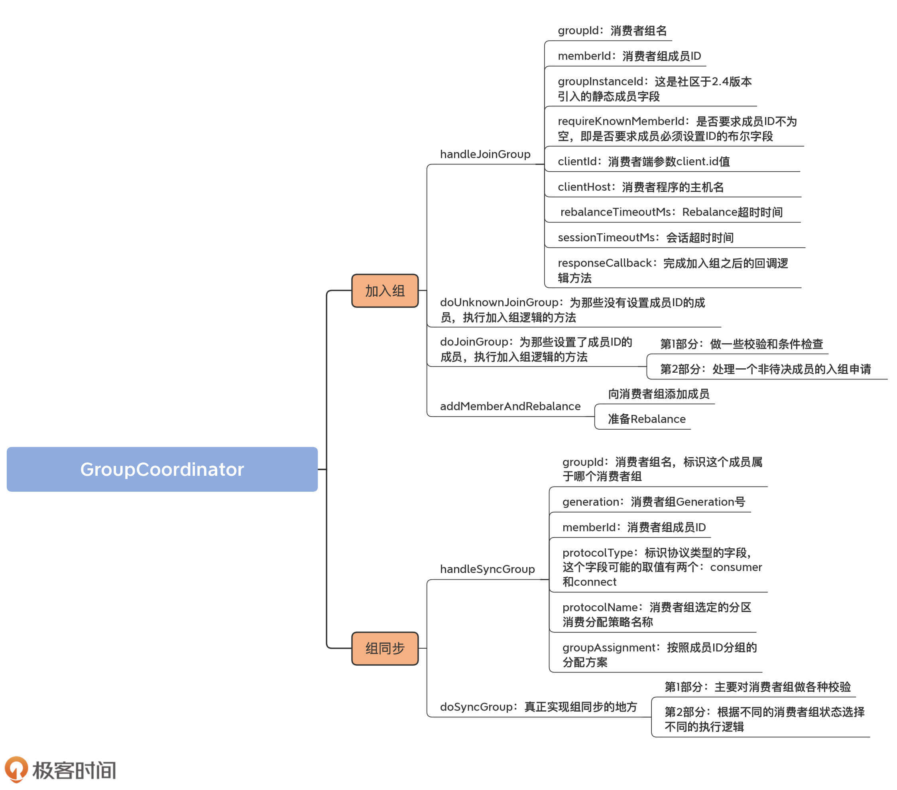

- 00 导读 构建Kafka工程和源码阅读环境、Scala语言热身.md.html
- 00 开篇词 阅读源码，逐渐成了职业进阶道路上的“必选项”.md.html
- 00 重磅加餐 带你快速入门Scala语言.md.html
- 01 日志段：保存消息文件的对象是怎么实现的？.md.html
- 02 日志（上）：日志究竟是如何加载日志段的？.md.html
- 03 日志（下）：彻底搞懂Log对象的常见操作.md.html
- 04 索引（上）：改进的二分查找算法在Kafka索引的应用.md.html
- 05 索引（下）：位移索引和时间戳索引的区别是什么？.md.html
- 06 请求通道：如何实现Kafka请求队列？.md.html
- 07 SocketServer（上）：Kafka到底是怎么应用NIO实现网络通信的？.md.html
- 08 SocketServer（中）：请求还要区分优先级？.md.html
- 09 SocketServer（下）：请求处理全流程源码分析.md.html
- 10 KafkaApis：Kafka最重要的源码入口，没有之一.md.html
- 11 Controller元数据：Controller都保存有哪些东西？有几种状态？.md.html
- 12 ControllerChannelManager：Controller如何管理请求发送？.md.html
- 13 ControllerEventManager：变身单线程后的Controller如何处理事件？.md.html
- 14 Controller选举是怎么实现的？.md.html
- 15 如何理解Controller在Kafka集群中的作用？.md.html
- 16 TopicDeletionManager： Topic是怎么被删除的？.md.html
- 17 ReplicaStateMachine：揭秘副本状态机实现原理.md.html
- 18 PartitionStateMachine：分区状态转换如何实现？.md.html
- 19 TimingWheel：探究Kafka定时器背后的高效时间轮算法.md.html
- 20 DelayedOperation：Broker是怎么延时处理请求的？.md.html
- 21 AbstractFetcherThread：拉取消息分几步？.md.html
- 22 ReplicaFetcherThread：Follower如何拉取Leader消息？.md.html
- 23 ReplicaManager（上）：必须要掌握的副本管理类定义和核心字段.md.html
- 24 ReplicaManager（中）：副本管理器是如何读写副本的？.md.html
- 25 ReplicaManager（下）：副本管理器是如何管理副本的？.md.html
- 26 MetadataCache：Broker是怎么异步更新元数据缓存的？.md.html
- 27 消费者组元数据（上）：消费者组都有哪些元数据？.md.html
- 28 消费者组元数据（下）：Kafka如何管理这些元数据？.md.html
- 29 GroupMetadataManager：组元数据管理器是个什么东西？.md.html
- 30 GroupMetadataManager：位移主题保存的只是位移吗？.md.html
- 31 GroupMetadataManager：查询位移时，不用读取位移主题？.md.html
- 32 GroupCoordinator：在Rebalance中，Coordinator如何处理成员入组？.md.html
- 33 GroupCoordinator：在Rebalance中，如何进行组同步？.md.html
- 特别放送（一）经典的Kafka学习资料有哪些？.md.html
- 特别放送（三）我是怎么度过日常一天的？.md.html
- 特别放送（二）一篇文章带你了解参与开源社区的全部流程.md.html
- 特别放送（五） Kafka 社区的重磅功能：移除 ZooKeeper 依赖.md.html
- 特别放送（四）20道经典的Kafka面试题详解.md.html
- 结束语 源码学习，我们才刚上路呢.md.html
- 捐赠
33 GroupCoordinator：在Rebalance中，如何进行组同步？
你好，我是胡夕。今天，我们继续学习消费者组Rebalance流程，这节课我们重点学习这个流程的第2大步，也就是组同步。
组同步，也就是成员向Coordinator发送SyncGroupRequest请求，等待Coordinator发送分配方案。在GroupCoordinator类中，负责处理这个请求的入口方法就是handleSyncGroup。它进一步调用doSyncGroup方法完成组同步的逻辑。后者除了给成员下发分配方案之外，还需要在元数据缓存中注册组消息，以及把组状态变更为Stable。一旦完成了组同步操作，Rebalance宣告结束，消费者组开始正常工作。
接下来，我们就来具体学习下组同步流程的实现逻辑。我们先从顶层的入口方法handleSyncGroup方法开始学习，该方法被KafkaApis类的handleSyncGroupRequest方法调用，用于处理消费者组成员发送的SyncGroupRequest请求。顺着这个入口方法，我们会不断深入，下沉到具体实现组同步逻辑的私有化方法doSyncGroup。
handleSyncGroup方法
我们从handleSyncGroup的方法签名开始学习，代码如下：
def handleSyncGroup(
groupId: String, // 消费者组名
generation: Int, // 消费者组Generation号
memberId: String, // 消费者组成员ID
protocolType: Option[String], // 协议类型
protocolName: Option[String], // 分区消费分配策略名称
groupInstanceId: Option[String], // 静态成员Instance ID
groupAssignment: Map[String, Array[Byte]], // 按照成员分组的分配方案
responseCallback: SyncCallback // 回调函数
): Unit = {
......
}
该方法总共定义了8个参数，你可以看下注释，了解它们的含义，我重点介绍6个比较关键的参数。
- groupId：消费者组名，标识这个成员属于哪个消费者组。
- generation：消费者组Generation号。Generation类似于任期的概念，标识了Coordinator负责为该消费者组处理的Rebalance次数。每当有新的Rebalance开启时，Generation都会自动加1。
- memberId：消费者组成员ID。该字段由Coordinator根据一定的规则自动生成。具体的规则上节课我们已经学过了，我就不多说了。总体而言，成员ID的值不是由你直接指定的，但是你可以通过client.id参数，间接影响该字段的取值。
- protocolType：标识协议类型的字段，这个字段可能的取值有两个：consumer和connect。对于普通的消费者组而言，这个字段的取值就是consumer，该字段是Option类型，因此，实际的取值是Some(“consumer”)；Kafka Connect组件中也会用到消费者组机制，那里的消费者组的取值就是connect。
- protocolName：消费者组选定的分区消费分配策略名称。这里的选择方法，就是我们之前学到的GroupMetadata.selectProtocol方法。
- groupAssignment：按照成员ID分组的分配方案。需要注意的是，只有Leader成员发送的SyncGroupRequest请求，才包含这个方案，因此，Coordinator在处理Leader成员的请求时，该字段才有值。
你可能已经注意到了，protocolType和protocolName都是Option类型，这说明，它们的取值可能是None，即表示没有值。这是为什么呢？
目前，这两个字段的取值，其实都是Coordinator帮助消费者组确定的，也就是在Rebalance流程的上一步加入组中确定的。
如果成员成功加入组，那么，Coordinator会给这两个字段赋上正确的值，并封装进JoinGroupRequest的Response里，发送给消费者程序。一旦消费者拿到了Response中的数据，就提取出这两个字段的值，封装进SyncGroupRequest请求中，再次发送给Coordinator。
如果成员没有成功加入组，那么，Coordinator会将这两个字段赋值成None，加到Response中。因此，在这里的handleSyncGroup方法中，它们的类型就是Option。
说完了handleSyncGroup的方法签名，我们看下它的代码：
// 验证消费者状态及合法性
validateGroupStatus(groupId, ApiKeys.SYNC_GROUP) match {
// 如果未通过合法性检查，且错误原因是Coordinator正在加载
// 那么，封装REBALANCE_IN_PROGRESS异常，并调用回调函数返回
case Some(error) if error == Errors.COORDINATOR_LOAD_IN_PROGRESS =>
responseCallback(SyncGroupResult(Errors.REBALANCE_IN_PROGRESS))
// 如果是其它错误，则封装对应错误，并调用回调函数返回
case Some(error) => responseCallback(SyncGroupResult(error))
case None =>
// 获取消费者组元数据
groupManager.getGroup(groupId) match {
// 如果未找到，则封装UNKNOWN_MEMBER_ID异常，并调用回调函数返回
case None =>
responseCallback(SyncGroupResult(Errors.UNKNOWN_MEMBER_ID))
// 如果找到的话，则调用doSyncGroup方法执行组同步任务
case Some(group) => doSyncGroup(
group, generation, memberId, protocolType, protocolName,
groupInstanceId, groupAssignment, responseCallback)
}
}
为了方便你理解，我画了一张流程图来说明此方法的主体逻辑。

handleSyncGroup方法首先会调用上一节课我们学习过的validateGroupStatus方法，校验消费者组状态及合法性。这些检查项包括：
- 消费者组名不能为空；
- Coordinator组件处于运行状态；
- Coordinator组件当前没有执行加载过程；
- SyncGroupRequest请求发送给了正确的Coordinator组件。
前两个检查项很容易理解，我重点解释一下最后两项的含义。
当Coordinator变更到其他Broker上时，需要从内部位移主题中读取消息数据，并填充到内存上的消费者组元数据缓存，这就是所谓的加载。
- 如果Coordinator变更了，那么，发送给老Coordinator所在Broker的请求就失效了，因为它没有通过第4个检查项，即发送给正确的Coordinator；
- 如果发送给了正确的Coordinator，但此时Coordinator正在执行加载过程，那么，它就没有通过第3个检查项，因为Coordinator尚不能对外提供服务，要等加载完成之后才可以。
代码对消费者组依次执行上面这4项校验，一旦发现有项目校验失败，validateGroupStatus方法就会将检查失败的原因作为结果返回。如果是因为Coordinator正在执行加载，就意味着本次Rebalance的所有状态都丢失了。这里的状态，指的是消费者组下的成员信息。那么，此时最安全的做法，是让消费者组重新从加入组开始，因此，代码会封装REBALANCE_IN_PROGRESS异常，然后调用回调函数返回。一旦消费者组成员接收到此异常，就会知道，它至少找到了正确的Coordinator，只需要重新开启Rebalance，而不需要在开启Rebalance之前，再大费周章地去定位Coordinator组件了。但如果是其它错误，就封装该错误，然后调用回调函数返回。
倘若消费者组通过了以上校验，那么，代码就会获取该消费者组的元数据信息。如果找不到对应的元数据，就封装UNKNOWN_MEMBER_ID异常，之后调用回调函数返回；如果找到了元数据信息，就调用doSyncGroup方法执行真正的组同步逻辑。
显然，接下来我们应该学习doSyncGroup方法的源码了，这才是真正实现组同步功能的地方。
doSyncGroup方法
doSyncGroup方法接收的输入参数，与它的调用方法handleSyncGroup如出一辙，所以这里我就不再展开讲了，我们重点关注一下它的源码实现。
鉴于它的代码很长，我把它拆解成两个部分，并配以流程图进行介绍。
- 第1部分：主要对消费者组做各种校验，如果没有通过校验，就封装对应的异常给回调函数；
- 第2部分：根据不同的消费者组状态选择不同的执行逻辑。你需要特别关注一下，在CompletingRebalance状态下，代码是如何实现组同步的。
我先给出第1部分的流程图，你可以先看一下，对这个流程有个整体的感知。

下面，我们来看这部分的代码：
if (group.is(Dead)) {
responseCallback(
SyncGroupResult(Errors.COORDINATOR_NOT_AVAILABLE))
} else if (group.isStaticMemberFenced(memberId, groupInstanceId, "sync-group")) {
responseCallback(SyncGroupResult(Errors.FENCED_INSTANCE_ID))
} else if (!group.has(memberId)) {
responseCallback(SyncGroupResult(Errors.UNKNOWN_MEMBER_ID))
} else if (generationId != group.generationId) {
responseCallback(SyncGroupResult(Errors.ILLEGAL_GENERATION))
} else if (protocolType.isDefined && !group.protocolType.contains(protocolType.get)) {
responseCallback(SyncGroupResult(Errors.INCONSISTENT_GROUP_PROTOCOL))
} else if (protocolName.isDefined && !group.protocolName.contains(protocolName.get)) {
responseCallback(SyncGroupResult(Errors.INCONSISTENT_GROUP_PROTOCOL))
} else {
// 第2部分源码......
}
可以看到，代码非常工整，全是if-else类型的判断。
首先，这部分代码会判断消费者组的状态是否是Dead。如果是的话，就说明该组的元数据信息已经被其他线程从Coordinator中移除了，这很可能是因为Coordinator发生了变更。此时，最佳的做法是拒绝该成员的组同步操作，封装COORDINATOR_NOT_AVAILABLE异常，显式告知它去寻找最新Coordinator所在的Broker节点，然后再尝试重新加入组。
接下来的isStaticMemberFenced方法判断是有关静态成员的，我们可以不用理会。
之后，代码判断memberId字段标识的成员是否属于这个消费者组。如果不属于的话，就封装UNKNOWN_MEMBER_ID异常，并调用回调函数返回；如果属于的话，则继续下面的判断。
再之后，代码判断成员的Generation是否和消费者组的相同。如果不同的话，则封装ILLEGAL_GENERATION异常给回调函数；如果相同的话，则继续下面的判断。
接下来，代码判断成员和消费者组的协议类型是否一致。如果不一致，则封装INCONSISTENT_GROUP_PROTOCOL异常给回调函数；如果一致，就进行下一步。
最后，判断成员和消费者组的分区消费分配策略是否一致。如果不一致，同样封装INCONSISTENT_GROUP_PROTOCOL异常给回调函数。
如果这些都一致，则顺利进入到第2部分。在开始之前，我依然用一张图来展示一下这里的实现逻辑。

进入到这部分之后，代码要做什么事情，完全取决于消费者组的当前状态。如果消费者组处于CompletingRebalance状态，这部分代码要做的事情就比较复杂，我们一会儿再说，现在先看除了这个状态之外的逻辑代码。
group.currentState match {
case Empty =>
// 封装UNKNOWN_MEMBER_ID异常，调用回调函数返回
responseCallback(SyncGroupResult(Errors.UNKNOWN_MEMBER_ID))
case PreparingRebalance =>
// 封装REBALANCE_IN_PROGRESS异常，调用回调函数返回
responseCallback(SyncGroupResult(Errors.REBALANCE_IN_PROGRESS))
case CompletingRebalance =>
// 下面详细展开......
case Stable =>
// 获取消费者组成员元数据
val memberMetadata = group.get(memberId)
// 封装组协议类型、分配策略、成员分配方案，调用回调函数返回
responseCallback(SyncGroupResult(group.protocolType, group.protocolName, memberMetadata.assignment, Errors.NONE))
// 设定成员下次心跳时间
completeAndScheduleNextHeartbeatExpiration(group, group.get(memberId))
case Dead =>
// 抛出异常
throw new IllegalStateException(s"Reached unexpected condition for Dead group ${group.groupId}")
}
如果消费者组的当前状态是Empty或PreparingRebalance，那么，代码会封装对应的异常给回调函数，供其调用。
如果是Stable状态，则说明，此时消费者组已处于正常工作状态，无需进行组同步的操作。因此，在这种情况下，简单返回消费者组当前的分配方案给回调函数，供它后面发送给消费者组成员即可。
如果是Dead状态，那就说明，这是一个异常的情况了，因为理论上，不应该为处于Dead状态的组执行组同步，因此，代码只能选择抛出IllegalStateException异常，让上层方法处理。
如果这些状态都不是，那么，消费者组就只能处于CompletingRebalance状态，这也是执行组同步操作时消费者组最有可能处于的状态。因此，这部分的逻辑要复杂一些，我们看下代码：
// 为该消费者组成员设置组同步回调函数
group.get(memberId).awaitingSyncCallback = responseCallback
// 组Leader成员发送的SyncGroupRequest请求需要特殊处理
if (group.isLeader(memberId)) {
info(s"Assignment received from leader for group ${group.groupId} for generation ${group.generationId}")
// 如果有成员没有被分配任何消费方案，则创建一个空的方案赋给它
val missing = group.allMembers.diff(groupAssignment.keySet)
val assignment = groupAssignment ++ missing.map(_ -> Array.empty[Byte]).toMap
if (missing.nonEmpty) {
warn(s"Setting empty assignments for members $missing of ${group.groupId} for generation ${group.generationId}")
}
// 把消费者组信息保存在消费者组元数据中，并且将其写入到内部位移主题
groupManager.storeGroup(group, assignment, (error: Errors) => {
group.inLock {
// 如果组状态是CompletingRebalance以及成员和组的generationId相同
if (group.is(CompletingRebalance) && generationId == group.generationId) {
// 如果有错误
if (error != Errors.NONE) {
// 清空分配方案并发送给所有成员
resetAndPropagateAssignmentError(group, error)
// 准备开启新一轮的Rebalance
maybePrepareRebalance(group, s"error when storing group assignment during SyncGroup (member: $memberId)")
// 如果没错误
} else {
// 在消费者组元数据中保存分配方案并发送给所有成员
setAndPropagateAssignment(group, assignment)
// 变更消费者组状态到Stable
group.transitionTo(Stable)
}
}
}
})
groupCompletedRebalanceSensor.record()
}
第1步，为该消费者组成员设置组同步回调函数。我们总说回调函数，其实它的含义很简单，也就是将传递给回调函数的数据，通过Response的方式发送给消费者组成员。
第2步，判断当前成员是否是消费者组的Leader成员。如果不是Leader成员，方法直接结束，因为，只有Leader成员的groupAssignment字段才携带了分配方案，其他成员是没有分配方案的；如果是Leader成员，则进入到下一步。
第3步，为没有分配到任何分区的成员创建一个空的分配方案，并赋值给这些成员。这一步的主要目的，是构造一个统一格式的分配方案字段assignment。
第4步，调用storeGroup方法，保存消费者组信息到消费者组元数据，同时写入到内部位移主题中。一旦完成这些动作，则进入到下一步。
第5步，在组状态是CompletingRebalance，而且成员和组的Generation ID相同的情况下，就判断一下刚刚的storeGroup操作过程中是否出现过错误：
- 如果有错误，则清空分配方案并发送给所有成员，同时准备开启新一轮的Rebalance；
- 如果没有错误，则在消费者组元数据中保存分配方案，然后发送给所有成员，并将消费者组状态变更到Stable。
倘若组状态不是CompletingRebalance，或者是成员和组的Generation ID不相同，这就说明，消费者组可能开启了新一轮的Rebalance，那么，此时就不能继续给成员发送分配方案。
至此，CompletingRebalance状态下的组同步操作完成。总结一下，组同步操作完成了以下3件事情：
- 将包含组成员分配方案的消费者组元数据，添加到消费者组元数据缓存以及内部位移主题中；
- 将分配方案通过SyncGroupRequest响应的方式，下发给组下所有成员。
- 将消费者组状态变更到Stable。
我建议你对照着代码，自行寻找并阅读一下完成这3件事情的源码，这不仅有助于你复习下今天所学的内容，还可以帮你加深对源码的理解。阅读的时候，你思考一下，这些代码的含义是否真的如我所说。如果你有不一样的理解，欢迎写在留言区，我们可以开放式讨论。
总结
今天，我们重点学习了Rebalance流程的第2步，也就是组同步。至此，关于Rebalance的完整流程，我们就全部学完了。
Rebalance流程是Kafka提供的一个非常关键的消费者组功能。由于它非常重要，所以，社区在持续地对它进行着改进，包括引入增量式的Rebalance以及静态成员等。我们在这两节课学的Rebalance流程，是理解这些高级功能的基础。如果你不清楚Rebalance过程中的这些步骤都是做什么的，你就无法深入地掌握增量式Rebalance或静态成员机制所做的事情。
因此，我建议你结合上节课的内容，好好学习一下消费者组的Rebalance，彻底弄明白一个消费者组成员是如何参与其中并最终完成Rebalance过程的。
我们来回顾一下这节课的重点。
- 组同步：成员向Coordinator发送SyncGroupRequest请求以获取分配方案。
- handleSyncGroup方法：接收KafkaApis发来的SyncGroupRequest请求体数据，执行组同步逻辑。
- doSyncGroup方法：真正执行组同步逻辑的方法，执行组元数据保存、分配方案下发以及状态变更操作。

讲到这里，Coordinator组件的源码，我就介绍完了。在这个模块中，我们基本上还是践行“自上而下+自下而上”的学习方式。我们先从最低层次的消费者组元数据类开始学习，逐渐上浮到它的管理器类GroupMetadataManager类以及顶层类GroupCoordinator类。接着，在学习Rebalance流程时，我们反其道而行之，先从GroupCoordinator类的入口方法进行拆解，又逐渐下沉到GroupMetadataManager和更底层的GroupMetadata以及MemberMetadata。
如果你追随着课程的脚步一路走来，你就会发现，我经常采用这种方式讲解源码。我希望，你在日后的源码学习中，也可以多尝试运用这种方法。所谓择日不如撞日，我今天就给你推荐一个课后践行此道的绝佳例子。
我建议你去阅读下clients工程中的实现消息、消息批次以及消息集合部分的源码，也就是Record、RecordBatch和Records这些接口和类的代码，去反复实践“自上而下”和“自下而上”这两种阅读方法。
其实，这种方式不只适用于Kafka源码，在阅读其他框架的源码时，也可以采用这种方式。希望你可以不断总结经验，最终提炼出一套适合自己的学习模式。
课后讨论
Coordinator不会将所有消费者组的所有成员的分配方案下发给单个成员，这就是说，成员A看不到成员B的分区消费分配方案。那么，你能找出来，源码中的哪行语句做了这件事情吗？
欢迎在留言区写下你的思考和答案，跟我交流讨论，也欢迎你把今天的内容分享给你的朋友。
© 2019 - 2023 Liangliang Lee. Powered by gin and hexo-theme-book.